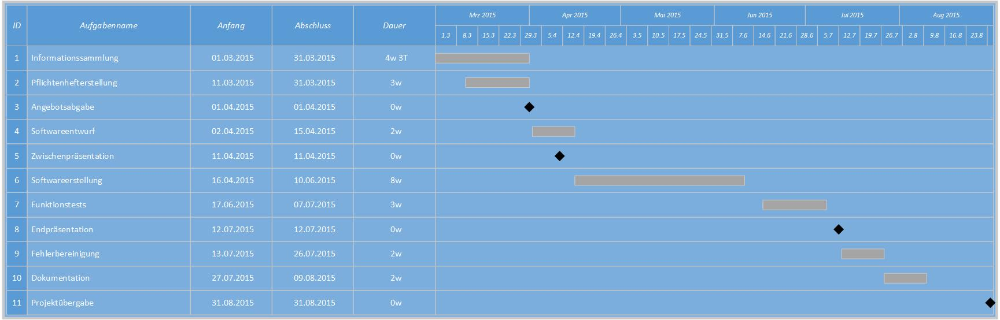
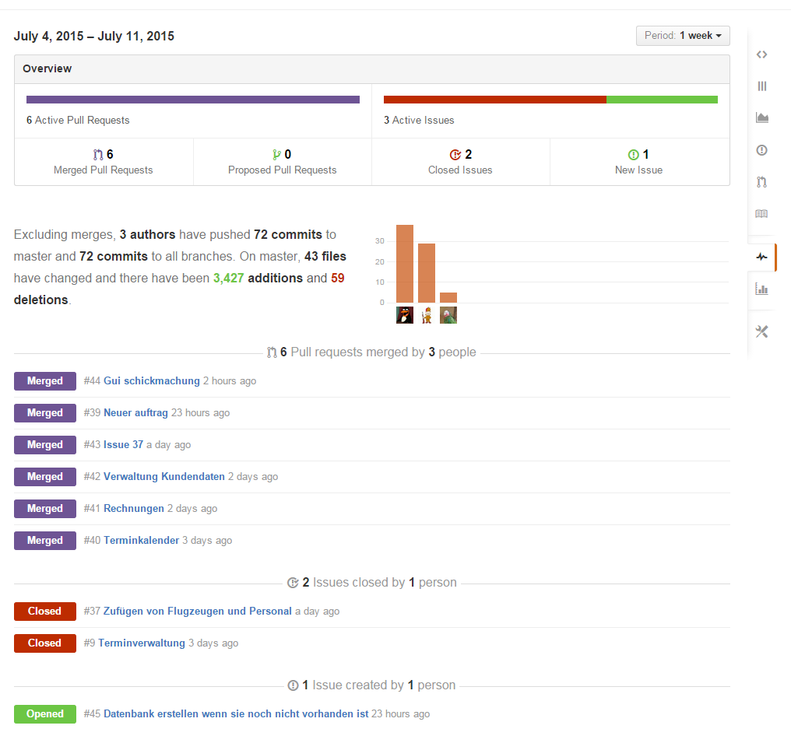
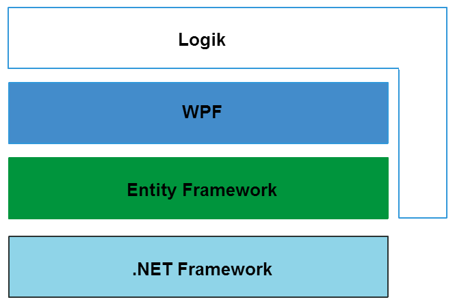

FlyHinotori
Statusbericht II
Auch verfügbar unter
http://flyhinotori.github.io/docs2
Aufwandsabschätzung
Wie liegen wir im Zeitplan?
Der Plan

Wie ist der Stand?

Wie liegen wir im Zeitplan?
Was fehlt noch?
TechStack

Architektur und Componenten
Demo-Time